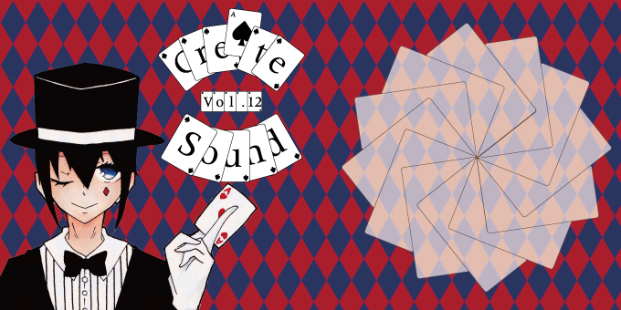

コピックを使用したイラスト制作
コピックを使って、イラストを描いています。
最近では、書いたイラストをスキャンしてPhotoshopやillustratorで加工することもあります。
個人活動
担当箇所:ジャケットデザイン
使用ツール:Illustrator/Photoshop/コピック など
製作期間:2015/07~
音楽制作サークル『Sound Create』ジャケット制作

音楽制作サークル『Sound Create』に所属し、曲を制作する他にジャケットを制作しました。
アナログで線画と色塗りを行い、その後パソコンに取り込み加工しています。Photoshopで取り込んだ画像の加工、Illustratorで背景の加工を行っています。